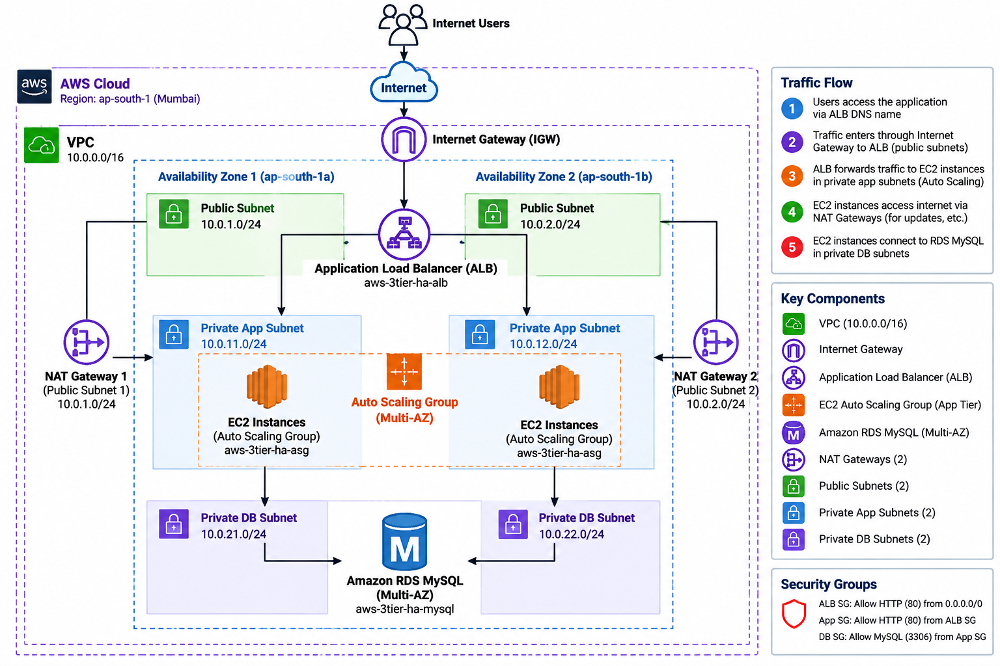

High-Availability 3-Tier Infrastructure
A two-Availability-Zone AWS architecture separating the load-balancing, application, and database tiers. Provisioned as Infrastructure as Code with Terraform, validated through real AWS tests, documented, and then cleanly destroyed.
Architecture
The diagram reflects the deployed design: public entry points in public subnets, application servers in private subnets, and an isolated RDS database tier.

Traffic flow
Internet traffic reaches the internet-facing Application Load Balancer and is forwarded to healthy application instances in private subnets.
01 · Public tier
Internet Gateway + public subnets + Application Load Balancer
02 · Application tier
EC2 instances managed by an Auto Scaling Group across two AZs.
03 · Database tier
Private RDS MySQL with Multi-AZ enabled and port 3306 restricted by Security Group.
Network design
VPC
10.0.0.0/16 · ap-south-1
Availability Zones
ap-south-1a · ap-south-1b
Private application egress
Each app subnet routes 0.0.0.0/0 through its corresponding NAT Gateway.
Database isolation
DB route tables have no default internet route.
Security model
Tier-to-tier access is controlled through Security Groups rather than broad subnet-level exposure.
ALB Security Group
Allows HTTP/HTTPS from the internet. The deployed listener was HTTP :80.
Application Security Group
Allows HTTP :80 only from the ALB Security Group.
Database Security Group
Allows MySQL :3306 only from the application Security Group.
RDS exposure
RDS was configured with public access disabled and encrypted storage.
Terraform implementation
The repository keeps the infrastructure separated into focused Terraform files instead of one large configuration.
main.tfVPC · subnets · routes · NAT
security_groups.tfTier access controls
alb.tfALB · target group · listener
ec2.tfIAM · launch template · ASG
rds.tfPrivate Multi-AZ MySQL
cloudwatch.tfMonitoring dashboard
cloudwatch_alarms.tfMetric alarms
variables.tfReusable inputs
resource "aws_vpc" "main" { cidr_block = var.vpc_cidr enable_dns_support = true enable_dns_hostnames = true }
Real validation
Only tests that were actually performed are listed here.
Terraform drift check
Final terraform plan returned: “No changes. Your infrastructure matches the configuration.”
ALB application test
The ALB served the application page and responses were observed from both Availability Zones.
Auto Scaling failure test
One application instance was terminated intentionally; the ASG launched a replacement that became healthy.
Target health
The target group reached 2 healthy and 0 unhealthy targets across ap-south-1a and ap-south-1b.
Build → Test → Document → Clean up
The infrastructure was intentionally destroyed after validation to avoid leaving billable lab resources running.
terraform init terraform validate terraform plan terraform apply # validate architecture and HA behavior terraform destroy
Final cleanup completed successfully: 39 Terraform-managed resources were destroyed. The source code and documentation remain in GitHub.